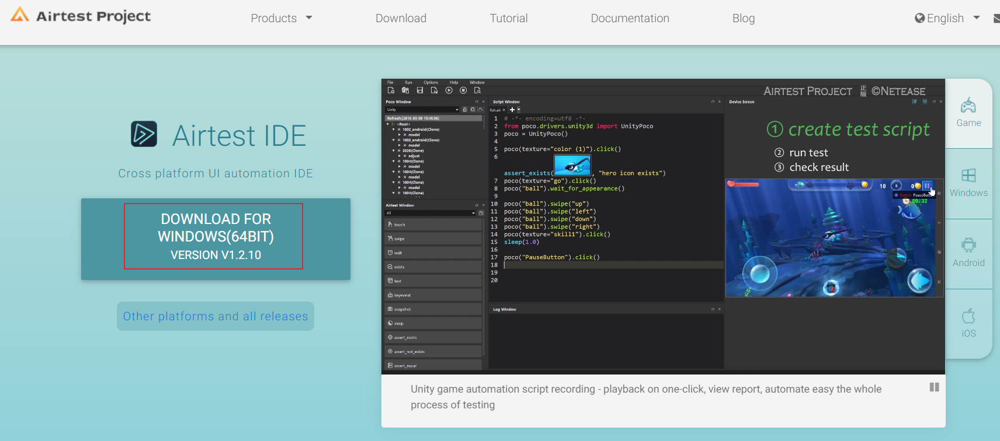
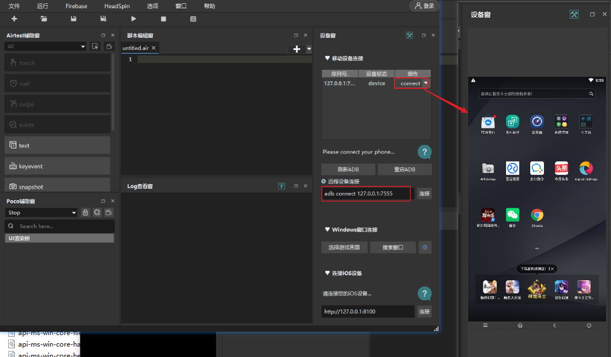
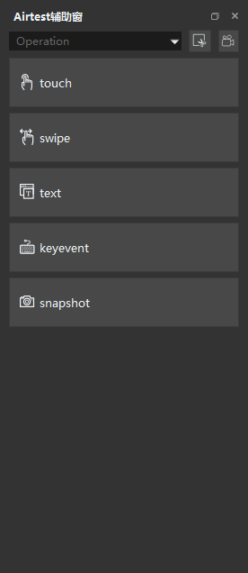
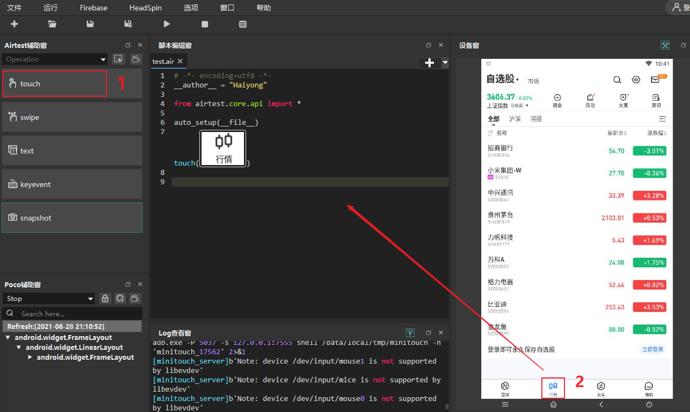
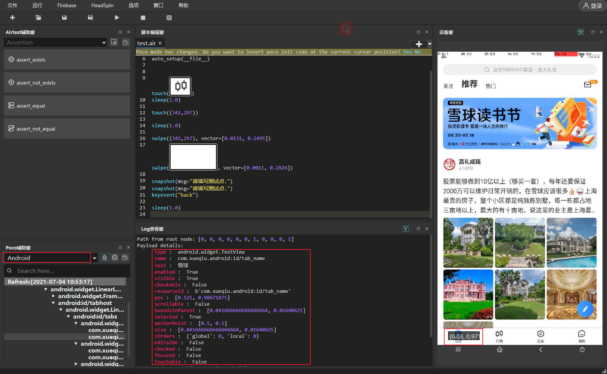
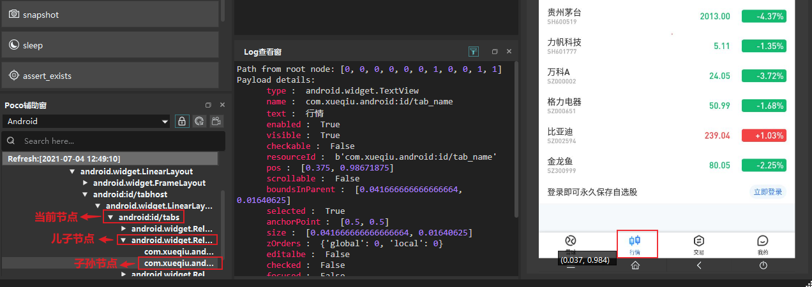

AirtestProject是由网易游戏推出的一款跨平台的UI自动化测试框架，主要是面向游戏的UI自动化测试，比如Unity3D、cocos2dx-*游戏框架，也支持Android原生app、iOS app、微信小程序的UI测试。本文主要介绍如何使用AirtestProject进行Android APP自动化测试。
AirtestProject组件
AirtestProject包括一下组件：
- Airtest：基于图像识别的自动化测试框架，适用于游戏和App，图像识别主要使用opencv库。项目地址：https://github.com/AirtestProject/Airtest
- Poco：基于UI元素识别的测试框架，支持Unity3D/cocos2dx-*/Android原生app/iOS原生app/微信小程序。项目github地址：https://github.com/AirtestProject/Poco
- AirtestIDE：图形界面，内置了Airtest和Poco的相关插件。官网地址：http://airtest.netease.com/
- AirLab：真机自动化云测试平台。
下面介绍如何使用Airtest和Poco进行自动化测试。
下载安装
先安装一下AirtestIDE，主要用于截图、UI 元素查看以及脚本调试，下载地址：http://airtest.netease.com/

下载完成后解压，打开AirtestIDE.exe文件，连接一个模拟器，模拟器页面会实时显示在右边：

Python安装：
1 | pip install -U airtest # airtest测试框架 |
Airtest使用
安装卸载apk
1 | install("path/to/your/apk") # 安装APK |
连接设备
1 | init_device(platform="Android",uuid="SNHVB20C18002195") # 连接android设备SNHVB20C18002195 |
打开、停止APP
打开APP
1 | start_app(package, activity=None) |
停止APP：
1 | stop_app(package) |
元素操作方法
常用的元素操作方法主要包括下面5种：

touch点击操作
1 | touch((100, 100), times=1) # 点击绝对坐标，times为点击次数，默认为1次 |
图片可以通过AirtestIDE来获取，点击Airtest辅助窗的touch方法，然后在设备窗中选择要操作的位置区域：

swipe滑动操作
1 | swipe(v1, v2, vector=None) # 从v1滑动到v2，v1为起点，可以是Template类或者像素坐标 |
text文本输入
使用此方法时要确保输入框为活动状态，可以先点击一下输入框，然后再输入
1 | text("test", enter=True) # 输入完成后，输入Enter键 |
keyevent键盘输入
1 | keyevent(keyname) # 在Android中类似于执行 adb shell input keyevent KEYNAME |
Android的按键可参考：https://developer.android.com/reference/android/view/KeyEvent
snapshot截图
1 | snapshot(filename=None, msg="", quality=None, max_size=None) # 保存屏幕截图，filename：图像名，quality：图像质量（1-99），max_size：大小 |
wait等待出现
等待目标图片出现
1 | wait(Template(r"tpl1624977188003.png"), timeout=None, interval=0.5, intervalfunc=None) # timeout：最大等待时间，interval：检查间隔时间 |
exists检查目标是否出现
检查当前界面是否出现指定目标
1 | pos = exists(Template(r"tpl1624977188003.png")) # 如果找到目标，可以返回目标位置坐标 |
断言
断言目标是否存在
断言目标存在：assert_exists
1 | assert_exists(Template(r"tpl1624977188003.png")) |
断言目标不存在：assert_not_exists1
assert_not_exists(Template(r"tpl1624977188003.png"))
值是否相等
1 | assert_equal(first, second) # 断言两个值相等 |
Poco使用
UI 元素可通过在AirtestIDE的Poco 辅助窗查看：

poco初始化
Android手机开启开发者模式，连接电脑，通过adb devices查看手机是否连接成功。
初始化：
1 | from poco.drivers.android.uiautomation import AndroidUiautomationPoco |
UI元素定位
基本选择器
1 | poco('node_name') # 默认第一个参数为节点名 |
相对选择器
和XPath的相对定位一样，poco可以根据父子关系、兄弟关系、祖孙关系来定位。

子节点和子孙节点定位：
1 | # select by direct child/offspring |
兄弟节点定位：
1 | poco("name").sibling("sibling_name") |
父节点：
1 | poco("name").parent("parent_name") |
属性获取
获取UI对象属性
1 | ele = poco(text='行情') |
执行结果：
1 | android.widget.TextView |
poco中的坐标采用百分比坐标，将x和y方向都缩放为0-1。
UI 元素操作
下面介绍几种常见poco元素操作方法
click点击
点击UI元素
1 | poco('name').click() # 默认点击UI元素锚点（左上角） |
点击坐标
1 | poco.click([0.5, 0.5]) # 点击屏幕中心点 |
set_text文本输入
1 | text = 'test' |
swipe滑动
1 | swipe(direction, focus=None, duration=0.5) |
direction ： 滑动方向，可选up，down，left，right，也可传入向量坐标。
duration：滑动持续时间，时间越短，滑动速度就越快，滑动的距离就越长
1 | ele = poco('name') |
根据坐标滑动
1 | poco.swipe(p1, p2=None, direction=None, duration=2.0) |
从坐标 (100, 100) 滑动到 (100, 200) ，手机屏幕分辨率为1920×10801
2
3poco.swipe([100/1920, 100/1080], [100/1920, 200/1080], duration=0.5)
# 或者
poco.swipe([100/1920, 100/1080], direction=[0, 100/1080], duration=0.5)
drag_to拖到
从一个UI元素拖到另一个UI元素
1 | ele1 = poco('name1').focus([0.5,0.5]) |
wait等待
等待目标对象出现，返回目标对象
1 | poco('name').wait(5).click() # 最多等待5秒，元素出现后点击 |
截图
1 | from base64 import b64decode |
总结
本文主要介绍了Airtest和poco的使用方法，Airtest的图片识别功能很好用，poco用于UI元素操作。可以将这它们结合起来使用，特别是在游戏的测试中，需要通过图标来定位。Airtest+poco还有一个优点就是app初始化启动速度要快于appium。
本文标题:App自动化测试工具Airtest
文章作者:hiyo
文章链接:https://hiyongz.github.io/posts/app-testing-tools-for-airtestproject/
许可协议:本博客文章除特别声明外，均采用CC BY-NC-ND 4.0 许可协议。转载请保留原文链接及作者。